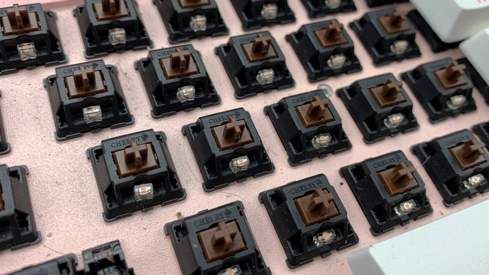
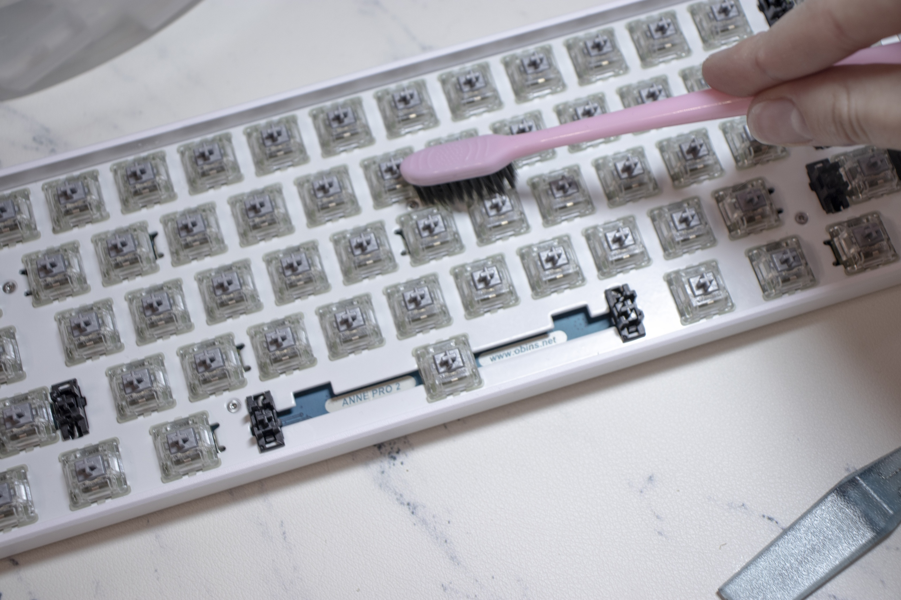

Уход за механической клавиатурой
Начнем с того, что клавиатуре действительно нужна забота, чтобы сохранить срок службы и первоначальный внешний вид. Пыль, волосы, крошки — все это скапливается под кейкапами и внутри корпуса, тем самым потихонечку засоряет не только плейт и плату, но и сами свитчи. Чаще всего это является причиной дабл кликов и залипаний.
Вот пример постоянного клиента на чистку:
Сегодня вместе в вами буду чистить свою клавиатуру. Ее состояние довольно запущенное (слабонервным не смотреть :D)


Я думаю, в арсенале каждого найдется пылесос, тряпка/салфетка, любое моющее средство и, конечно же, вода. А если все делать идеально, то в списочек можно добавить дистиллированную воду и пуллер. Это немного ускоряет работу, в процессе объясню почему.
Для начала отключите клавиатуру от питания, это очень важно. От одной неудачной капельки воды может коротнуть, и клавка погибнет.
Снимите все кейкапы с помощью пуллера. Если его нет, то просто подденьте их подручными средствами, хоть пластиковой картой. Но пуллер сильно ускоряет процесс, лучше обзавестись этой волшебной штукой.
Помыть их можно очень легко. Закидываем в обычную воду из под крана. С пылью справится. Можно добавить фейри или любе моющее средство, если капы грязнее обычного. Оставляем плавать на 15 минут.
Вода из-под крана чаще всего оставляет белые разводы на кейкапах, т.к. она со всякими примесями. Если купать капы в дистиллированной воде, разводов не будет.
Если не хотите заморачиваться, то просто протирайте каждый кап по отдельности тряпочкой. Но это немного дольше.
Есть один нюанс: если в кейкап въелась грязь, то его следует отдельно почистить с мылом или любым моющим средством. Просто налейте на губку/щетку средство и прочистите, после промойте водой. У меня стоят голубые кейкапы Tai-hao — это прорезиненный ABS пластик, они очень сильно грязнятся, поэтому обязательно дополнительно очищаю. Зубная щетка + фейри, пару минут и готово.
Пока капы освежаются, займемся плейтом и корпусом.
Берем пылесос, надеваем маленькую насадку с щеточкой (если ее нет, то можно не надевать) и приступаем к очистке плейта. Если пылесос отсутствует, но есть баллончик со сжатым воздухом — можно использовать его. Есть вариант проверить ваши легкие и просто сдуть весь мусор. Это не так эффективно, но тоже сойдет. Минусы использования последних двух способов — это последующая уборка мусора со стола, шкафа, пола и т.д. Все просто разлетится :)
Если дома завалялся спирт (Не выше 40%), то можно прокапать каждый переключатель, 2-3 капли достаточно. Это нужно для того, чтобы грязюка, которая проникла в переключатель, немного прочистилась. Это особенно помогает, если у вас дабл клики или небольшие залипания. Обязательно прокликайте все переключатели после прокапывания, чтобы был эффект.
Плейт протрите влажной ватной палочкой или зубной щеткой. Я это делаю той же щеткой, она отлично убирает прилипшую грязюку и собирает кошачьи волосы, застрявшие в переключателях (обладатели животных точно поймут). Смачивала щетку техническим спиртом.
ВНИМАНИЕ! Если ваши переключатели имеют прозрачную часть, то использование технического спирта будет на ваш страх и риск — поликарбонат может потрескаться и развалиться. Без вреда для переключателей можно разбавить спирт дистиллированной водой или взять водку. Еще очень хорошо справляется средство для мойки стекол.
Также не забываем про корпус. Все то же самое: вода, тряпка/губка и моющее средство, если нужно.
После всех процедур капы нужно идеально просушить, чтобы вода случайно не попала в сам переключатель. Выложите их на салфетку и оставьте сушиться. Если положить на батарею или направить на них вентилятор, сушка пройдет значительно быстрее.
Лично я просто протерла тряпочкой и «выдула» всю воду с обратной стороны капов. Это дольше, но привычней.
Надеваем высушенные капы на клавку и радуемся результату. Все элементарно и просто. Главное не забывать о том, что чаще всего клавиатуры ломаются от грязи.
Если есть загрязнения, которые не берутся моющим средством, то можно попробовать протереть спиртом, но тут есть свои исключения: ABS пластик, корпус/капы, плейт. PBT пластик с примесями, корпус/капы, плейт. Можно стереть верхний слой и будет очень некрасиво. Поэтому, если сомневаетесь — не стоит рисковать. Либо хорошенько разбавьте спирт водой.
А теперь немного рекламки. У нас есть услуга профилактическая чистка клавиатуры. В целом мы делаем все то же самое, но за денежку. Если вам очень лень, то приходите к нам :)